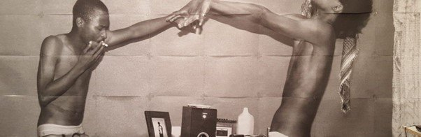
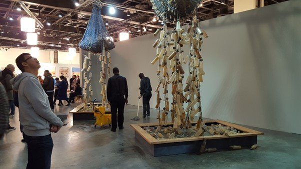
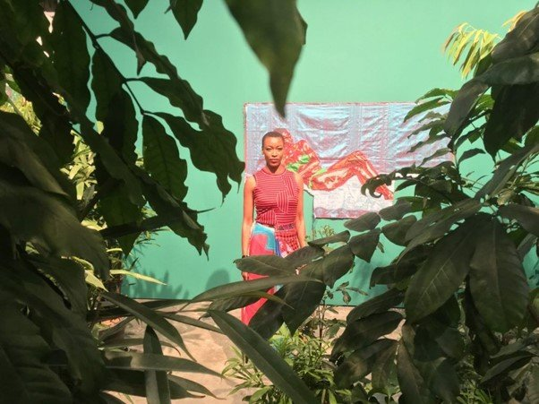
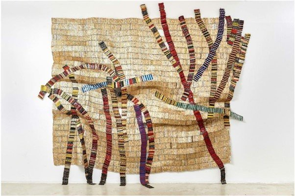
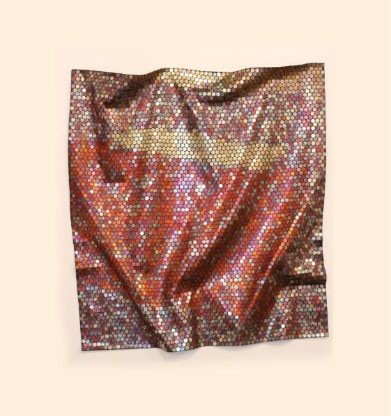
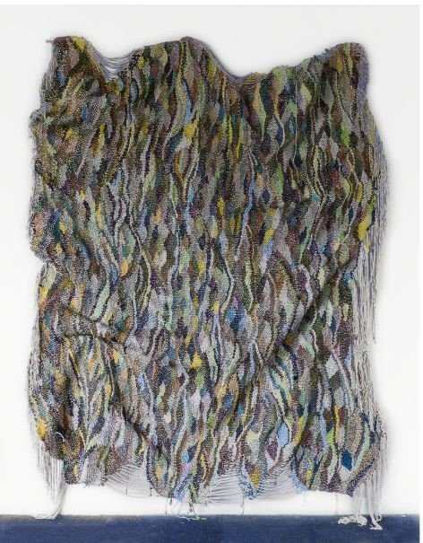
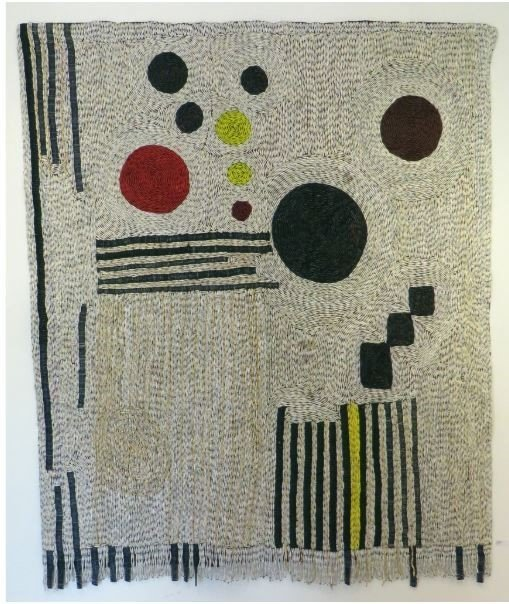
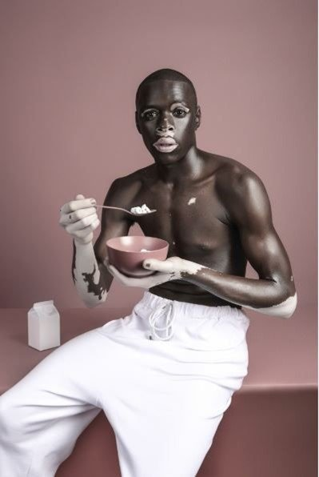
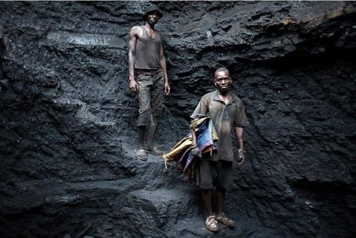
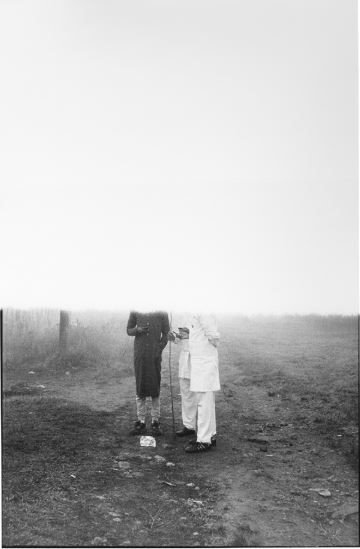

Originally published in Mada on 22 December 2018
By Ismail Fayed
"One who smells not only with his nose but also with his eyes and ears will notice everywhere these days an air as of a lunatic asylum or sanatorium… so paltry, so stealthy, so dishonest, so sickly-sweet! Here.. the air stinks of secretiveness and pent-up emotion."
Friedrich Nietzsche, The Genealogy of Morals (1887)

Musa Nxumalo, Alternative Kidz
I had many questions in my head as our little bus shuttled us to the Sandton Convention Center, where the 11th edition of the Joburg Art Fair was being held. Sandton, the financial district of Johannesburg — with its luxury hotels and tall glass towers — reminded me of the cities of the Gulf: an impressive, perfectly manicured urban landscape that seems to be cut off from the city; a module that could be infinitely reproduced in any other city around the world. It was my first time in Johannesburg and I was trying to understand the layout of the city — the discrepancies between the extreme displays of affluence situated next to shanty towns immediately evoked Cairo with its equally problematic spatial geography. Even if one did not know anything about apartheid, the city was carrying an open secret.
This contentious space, with its layered history, begs the question of how contemporary art responds to the reality of a country with an incredibly violent past (apartheid only ended in 1994 — an event everyone of my generation would remember a thing or two about) without falling into the trappings of the "market" and its inevitable capricious demands. This is not to imply that artists should not get paid for their creative labour, but rather to say that the creative labour of artists should not be used by a government or a system that perpetuates the horrors of settler colonialism or unceasing exploitation. Upon examining this loaded question, one immediately realizes that South African artists, of all racial backgrounds, are faced with a profoundly complex task: They have to seek support and patronage for their work and, at the same time, engage with their reality and history, while safeguarding a certain sense of integrity and autonomy.
This is not just some abstract ethical exercise. Take, for example, Sue Williamson's large-scale installation, "Messages from the Atlantic" (2017), which was originally presented at Basel Unlimited and is the first artwork that greets you as you enter the space. Williamson, a white woman who was born in England but based in South Africa for most of her life, has created many artworks examining the history of South Africa and the lives of black South Africans under European colonialism and apartheid. Her installation at the fair shows three massive nets containing dozens of glass bottles with the name, gender, height and weight of African slaves transported on three slave ships. The nets, suspended from the ceiling, are constantly overflowing with water that pours all the way down into three large, square wooden basins. Each basin and net is supposed to stand for one of the slave ships and each bottle stands for one the slaves transported, as per the archival research conducted by Williamson.

Sue Williamson, Messages from the Atlantic, 2017, installation view
Picture the water — spilling onto the floor next to the wooden basins — symbolizing how overwhelming the experience of being transported as a slave across the Atlantic was (and how slaves who couldn't survive the journey were dumped in the ocean) — and then picture black janitors having to constantly wipe that very same water. Everyone who initially took notice thought it was a performance — only it wasn't. And this is precisely why such works need to be questioned on more than just their artistic and aesthetic merit. For instance, did Williamson actually oversee the installation of the work and how it was maintained? Did she witness how black men, probably earning minimum wage, were "wiping" the "excesses" of her creative work?
Williamson's work, however, was not the only "excess" about the fair. The way the space was organized reminded me of Art Dubai, sponsored by almost the same companies (instead of Piaget, though, there was Cartier). It is hard to wrap one's mind around that kind of sponsorship when none of the subjects of the artworks displayed can afford to buy them. The cheapest artwork available would be a paper print edition of a poster, which costs around 400 rands. The average monthly salary of a black woman in the service sector (let's say one of the servers or janitors at the fair) — ranges from 1,000 to 1,500 rands. Meaning that, if any of the black workers were interested in buying the artworks depicting them, they could only afford a print and would have to pay half a month's salary for it.
One might argue that artworks were not meant to be bought by janitors and servers (a bourgeois argument disguised as a pragmatic one), but then why paint those janitors and servers, photograph them, stencil them, speak in their name about their struggles and even win an award for doing an "immersive installation" about them? I am referring to Haroon Gunn-Salie's "Senzenina," an installation where an audio recording of the miners' protests of the Marikana Massacre in 2012 were played to audiences huddling together in a dark and enclosed space. Gunn-Salie is this year's FNB Art Prize winner, and I can't help but wonder if the miners' families were invited to the opening, or even involved in the process. It seems, however, like black bodies only serve as material; never as agents, buyers or even spectators.

Billie Zangewa, The Garden, installation shot
Meanwhile, "The Garden" — a series of silk tableaux by Billie Zangewa, this year's featured artist — luxuriates in a decadent amalgamation of textures and colours. The pieces, mostly depicting semi-nude men and women in domestic interiors, were installed in a little booth that was literally transformed into a lush garden with leafy ferns and little palms. There was definitely a sense of celebrated domesticity in there, perhaps even an exalted one, but I couldn't see it as a work addressing gender inequality or even the oppression women face as claimed in the press release: "[Zangewa's work] challenges the historical stereotyping, objectification and exploitation of the black female body."

El Anatsui, Resolution

Yaw Owusu, In the Land of Gold, 2018
Also present in the fair were, of course, the usual suspects, most importantly international Ghanian artist El Anatsui, with his intricately weaved assemblages that seem to have inspired many imitations, including the winner of this year's Helvetia Art Prize, Yaw Owusu's "In the Land of Gold" (2018). Igshaan Adams' "UITSIG" (2018) from Blank Projects Gallery was also reminiscent of El Anatsui's aesthetic, as was Sanaa Gateja's "White Mood" from Afriart Gallery.

Igshaan Adams, UITSIG, 2018

Sanaa Gateja, White Mood
Perhaps the most interesting works in the fair came in the form of photography. For instance, in Musa Nxumalo's 2009 "Alternative Kidz" series, depicting youth culture in South Africa, one photo shows two young, shirtless black men smoking while trying to mirror each other's movement in an erotic asymmetry. Equally erotic and eerie is Justin Dingwall's Ruby series, showing a black male model with vitiligo in different states of undress against different backgrounds, with different objects accentuating the tones of his skin spots, almost blending in with them.

Justin Dingwall, Ruby series

Mauro Pinto, Blue Bird Flies, 2017
More of a fashion photoshoot than anything else, Dingwall's work seems to be in stark contrast to Mauro Pinto's "Blue Bird Flies" (2017), which shows two miners against a rocky background, their misery unembellished, yet with a chromatic richness to match.
The most striking piece of photography that I saw was Sabelo Mlangeni's "A Morning After," part of his religiously inflected project Umlindelo wamaKholwa (The Night Vigils of the Believers), which documents the pilgrimage of the Zionist Christian Church in South Africa. The almost-erased figures — one is not sure if this is as a result of mist or fog, or if they are intentionally clouded — appear as a direct, yet profound, play on the idea of the mystery of faith and its effects on our presence and identity.

Sabelo Mlangeni, A Morning After, from Umlindelo wamaKholwa (The Night Vigils of the Believers)
The contemporary art economy is worth more than a billion dollars and there must be a sense of accomplishment that South Africa was able to integrate itself so well into that economy. But, like any other economy that operates with market logic, the questions of exploitation, justice, and redress weigh much more heavily than we think or would like to think. It is laudable that South African artists and other artists from the continent are producing work that is admired and even purchased for its perceived aesthetic value, yet one should ask oneself at what price and at the expense of whom.